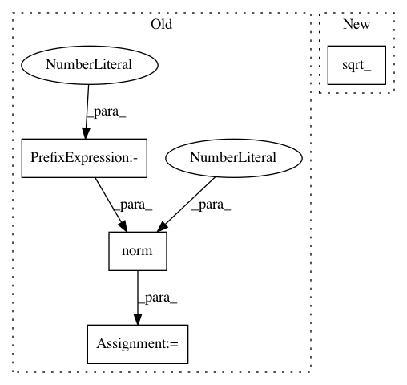

9e4d2ba315b6b1269eca5396f2b9224b63207605,gpytorch/kernels/matern_kernel.py,MaternKernel,forward,#MaternKernel#Any#Any#,110
Before Change
x2_ = (x2 - mean).div(self.lengthscale)
x1_, x2_ = self._create_input_grid(x1_, x2_, **params)
distance = (x1_ - x2_).norm(2, dim=-1)
exp_component = torch.exp(-math.sqrt(self.nu * 2) * distance)
if self.nu == 0.5:
constant_component = 1
After Change
x1_ = (x1 - mean).div(self.lengthscale)
x2_ = (x2 - mean).div(self.lengthscale)
distance = self._covar_sq_dist(x1_, x2_, **params).sqrt_()
exp_component = torch.exp(-math.sqrt(self.nu * 2) * distance)
if self.nu == 0.5:
constant_component = 1
In pattern: SUPERPATTERN
Frequency: 4
Non-data size: 4
Instances
Project Name: cornellius-gp/gpytorch
Commit Name: 9e4d2ba315b6b1269eca5396f2b9224b63207605
Time: 2018-12-19
Author: gardner.jake@gmail.com
File Name: gpytorch/kernels/matern_kernel.py
Class Name: MaternKernel
Method Name: forward
Project Name: cornellius-gp/gpytorch
Commit Name: 9e4d2ba315b6b1269eca5396f2b9224b63207605
Time: 2018-12-19
Author: gardner.jake@gmail.com
File Name: gpytorch/kernels/cosine_kernel.py
Class Name: CosineKernel
Method Name: forward
Project Name: cornellius-gp/gpytorch
Commit Name: ed40be9f34cfbfa4c3ee0f6864a18f5fa4f733f8
Time: 2018-12-17
Author: jrg365@cornell.edu
File Name: gpytorch/kernels/cosine_kernel.py
Class Name: CosineKernel
Method Name: forward
Project Name: cornellius-gp/gpytorch
Commit Name: ed40be9f34cfbfa4c3ee0f6864a18f5fa4f733f8
Time: 2018-12-17
Author: jrg365@cornell.edu
File Name: gpytorch/kernels/matern_kernel.py
Class Name: MaternKernel
Method Name: forward